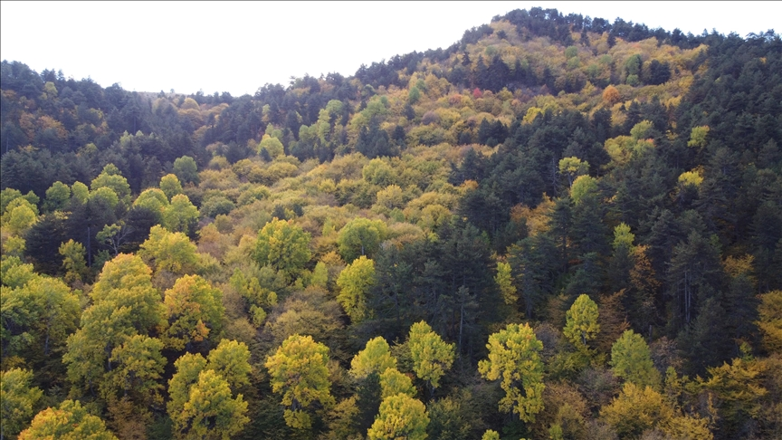

Mevzuat Rehberi
Kanun ve Yönetmelikleri Projenize Uygun Şekilde Yorumlayın
Orman alanlarındaki yatırımlarda doğru mevzuat okuması, sürecin en kritik aşamasıdır. Bu sayfada 6831 sayılı Orman Kanunu, madde 16 ve madde 17/3 uygulama başlıklarını proje yönetimi bakışıyla sade ve uygulanabilir biçimde özetliyoruz.
6831 Sayılı Kanun
Madde 16
Madde 17/3

3
Ana Düzenleme
81
Aktif Kurum Referansı
24
Saatte İlk Dönüş
Temel Çerçeve
Projelerde En Sık Karşılaşılan Mevzuat Başlıkları
6831 Sayılı Orman Kanunu
Ormanların korunması, tahsisi, irtifak süreçleri ve izin yapısının ana çerçevesini belirler.
- Alan statüsü tespiti
- Kurum görüşü uyumu
- Uygunluk raporlaması
Madde 16 Uygulamaları
Kamu yararı/zorunluluk kapsamında geçiş, yol, enerji ve altyapı izin dosyalarının yönetimi.
- Ön izin planlaması
- Kesin izin dokümantasyonu
- Saha aplikasyon kontrolü
Madde 17/3 Uygulamaları
Maden, enerji ve üretim sahalarında izin, revizyon ve kurum takibi odaklı uygulama başlıkları.
- Teknik pafta seti
- Revizyon ve yazışma takibi
- Saha uygunluk kapanışı
Uygulama Akışı
Mevzuat Uyum Sürecini Nasıl Yönetiyoruz?
Dosya Ön İnceleme
Alan, proje tipi ve kurum beklentilerine göre hangi düzenlemelerin esas alınacağı netleştirilir.
Uygunluk Haritası
Riskli başlıklar, eksik belgeler ve kritik onay noktaları için aksiyon planı hazırlanır.
Başvuru ve Takip
Kurum yazışmaları, teknik revizyonlar ve saha eşleştirmeleri tek çizgide yürütülür.
Kapanış ve Rapor
Onay sonrası yükümlülükler, saha çıktıları ve nihai durum raporu eksiksiz teslim edilir.
Kritik Noktalar
Ret ve Gecikme Riski Oluşturan Yaygın Hatalar
Eksik Kurum Görüşü
Proje tipine göre zorunlu kurum görüşlerinin eksik kalması süreçte doğrudan gecikmeye yol açar.
Pafta-Başvuru Uyumsuzluğu
Koordinat, pafta ve metraj uyumsuzlukları revizyon talebi doğurarak başvuruyu geri düşürebilir.
Mevzuat Güncellemesini Kaçırma
Güncel hükümler takip edilmediğinde hazırlanmış dosya yasal zeminde yetersiz kalabilir.
Konum
Kurumsal Merkez
Hazır Mısınız?
Yasal Süreci Belirsizlikten Çıkarıp Planlı Hale Getirelim
Teknik dosya kurgusu, kurum takibi ve saha doğrulamasıyla mevzuat sürecinizi güvenli ilerletin.